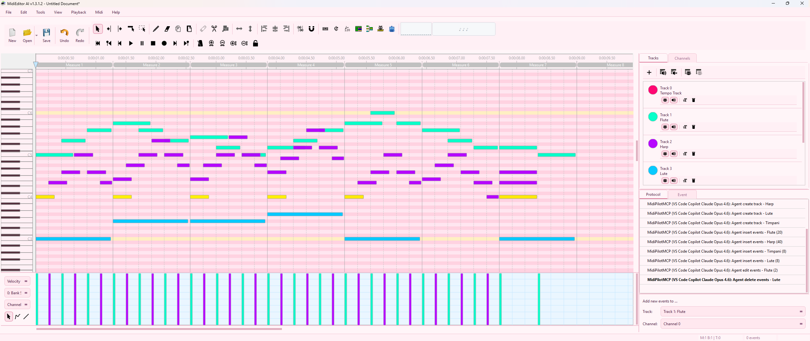
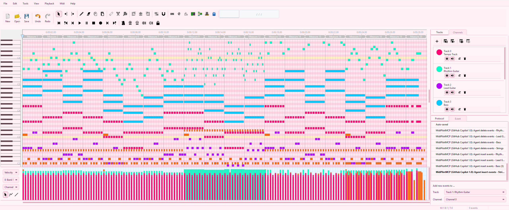
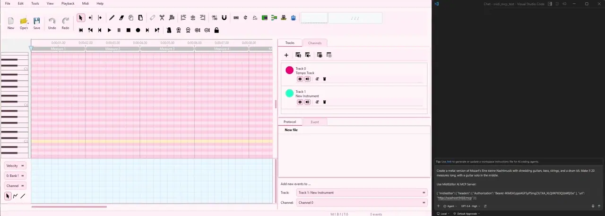
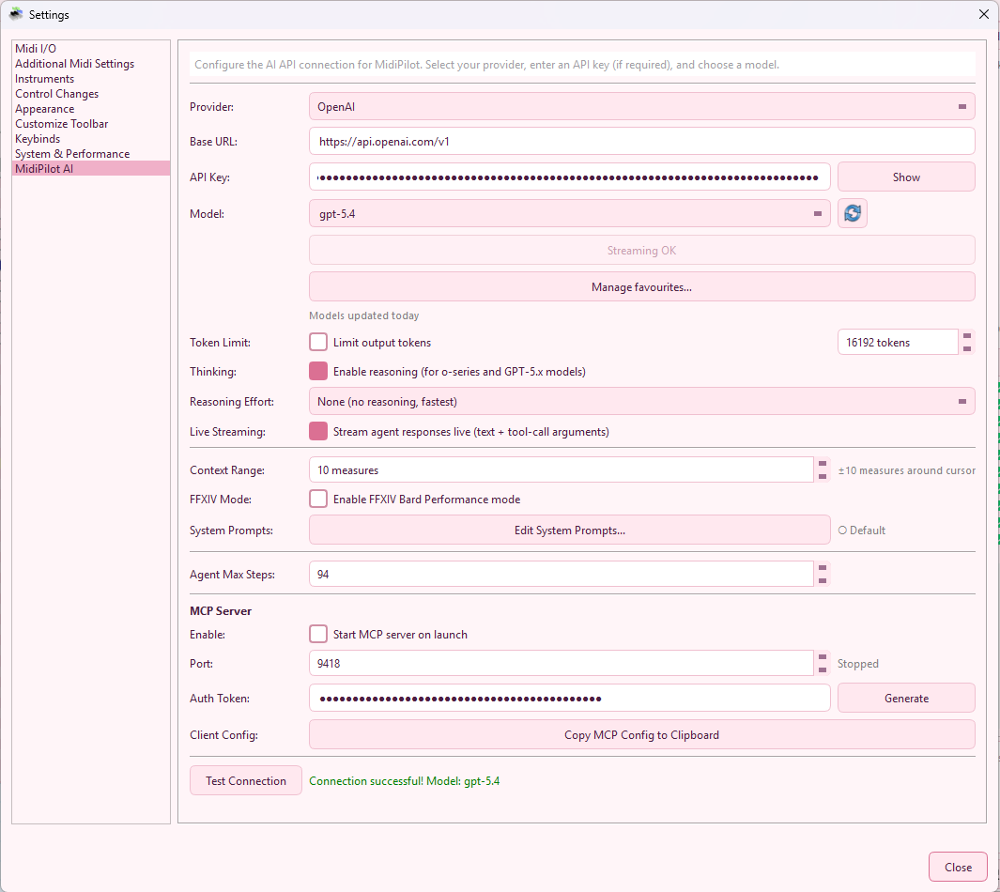
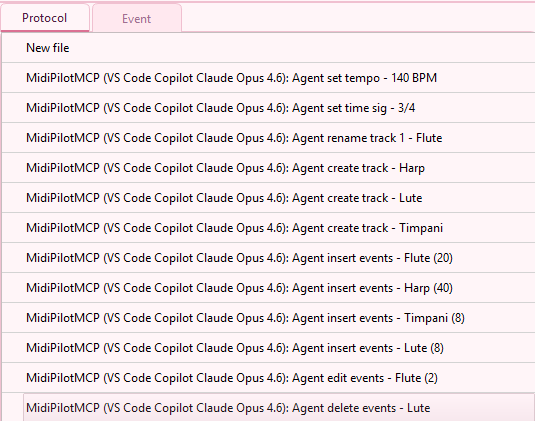

MCP Server - Model Context Protocol
MidiEditor AI includes a built-in MCP (Model Context Protocol) server that lets any MCP-compatible AI client - Claude Desktop, VS Code Copilot, Cursor, Windsurf, Continue, and others - directly use MidiEditor’s MIDI editing tools. Instead of copy-pasting between your AI client and the editor, the AI can read your MIDI file, create tracks, insert notes, set tempo, and more - all through a standard protocol.

What is MCP?
The Model Context Protocol is an open standard that lets AI models discover and use external tools. Think of it like a USB port for AI - any AI client that speaks MCP can plug into MidiEditor AI and control it.
MidiEditor AI’s MCP server exposes the same 15 tools that the built-in MidiPilot AI uses. The difference is that with MCP, you choose which AI client and model to use.
Demo & Examples
See MidiEditor AI's MCP server in action with this AI-composed metal remix of Mozart's Eine kleine Nachtmusik - created using the MCP protocol with shredding guitars, strings, and drums:


Listen & Download:
This demo shows how an external MCP client (Claude, VS Code Copilot, Cursor, etc.) can compose music by calling MidiEditor AI's tools. All 20 measures were created via the MCP protocol with a guitar solo in the middle.
Quick Start
-
Enable the MCP Server
Go to Edit → Settings → AI Settings. In the MCP Server section, check “Start MCP server on launch”. Optionally generate an auth token for security. -
Copy the Config
Click “Copy MCP Config to Clipboard”. This copies a ready-to-paste JSON snippet with the URL, port, and auth token. -
Paste into Your AI Client
Add the JSON to your client’s MCP configuration file (see Client Setup below). -
Restart Your AI Client
The MCP server starts immediately when you check the box in Settings. Just restart your AI client (Claude Desktop, VS Code, Cursor, etc.) so it connects to the running server. -
Start Editing
Open a MIDI file in MidiEditor AI, then ask your AI client to compose, edit, or analyze. All changes appear live in the editor with full undo support.

Toolbar Toggle Button
You can also start and stop the MCP server directly from the toolbar without opening Settings. The MCP Server button shows the server status at a glance:
Click the button to toggle the server on or off. The toolbar button stays in sync with the checkbox in Settings. You can reposition or hide it via Edit → Settings → Layout → Customize Toolbar.
Client Setup
Click “Copy MCP Config to Clipboard” in MidiEditor AI’s settings, then paste it into the appropriate config file for your AI client.
Edit %APPDATA%\Claude\claude_desktop_config.json:
{
"mcpServers": {
"midieditor": {
"url": "http://localhost:9420/mcp",
"headers": {
"Authorization": "Bearer YOUR_TOKEN_HERE"
}
}
}
}Restart Claude Desktop after saving.
Add to your VS Code settings.json or create .vscode/mcp.json in your workspace:
// settings.json
{
"mcp": {
"servers": {
"midieditor": {
"url": "http://localhost:9420/mcp",
"headers": {
"Authorization": "Bearer YOUR_TOKEN_HERE"
}
}
}
}
}// .vscode/mcp.json
{
"servers": {
"midieditor": {
"url": "http://localhost:9420/mcp",
"headers": {
"Authorization": "Bearer YOUR_TOKEN_HERE"
}
}
}
}Edit ~/.cursor/mcp.json:
{
"mcpServers": {
"midieditor": {
"url": "http://localhost:9420/mcp",
"headers": {
"Authorization": "Bearer YOUR_TOKEN_HERE"
}
}
}
}Edit ~/.windsurf/mcp_config.json:
{
"mcpServers": {
"midieditor": {
"url": "http://localhost:9420/mcp",
"headers": {
"Authorization": "Bearer YOUR_TOKEN_HERE"
}
}
}
}The MCP server uses Streamable HTTP transport (MCP 2025-03-26) on a single endpoint:
| Endpoint | Method | Description |
|---|---|---|
/mcp | POST | JSON-RPC 2.0 messages (initialize, tools/call, etc.) |
/mcp | GET | SSE stream for server-initiated notifications |
/mcp | DELETE | End session |
Include the Mcp-Session-Id header (returned by initialize) in all subsequent requests.
Available Tools
All 15 tools from MidiEditor AI’s built-in MidiPilot are exposed via MCP.
The AI client discovers them automatically via tools/list.
Read-Only Tools READ
| Tool | Description |
|---|---|
get_editor_state | Get file info, tracks, cursor position, tempo, time signature, and selected events |
get_track_info | Get details about a specific track (name, channel, note count, pitch range) |
query_events | Query MIDI events in a tick range on a track |
Write Tools WRITE
| Tool | Parameters | Description |
|---|---|---|
create_track | trackName, channel | Create a new MIDI track |
rename_track | trackIndex, newName | Rename an existing track |
set_channel | trackIndex, channel | Set the MIDI channel for a track |
insert_events | trackIndex, events | Insert MIDI events (notes, program changes, CCs) |
replace_events | trackIndex, startTick, endTick, events | Replace events in a tick range |
delete_events | trackIndex, startTick, endTick | Delete events in a tick range |
set_tempo | bpm, tick | Set tempo at a tick position |
set_time_signature | numerator, denominator, tick | Set time signature at a tick position |
move_events_to_track | sourceTrackIndex, targetTrackIndex, startTick, endTick | Move events between tracks |
FFXIV Tools FFXIV
These tools appear automatically when FFXIV mode is enabled in MidiEditor AI.
The server sends a notifications/tools/list_changed notification when FFXIV mode is toggled,
so connected clients refresh their tool list automatically.
| Tool | Description |
|---|---|
validate_ffxiv | Check if the file meets FFXIV Bard Performance constraints |
convert_drums_ffxiv | Convert a GM drum track into FFXIV drum instrument tracks |
setup_channel_pattern | Fix FFXIV channel assignments and program_change events |
MCP Resources
MCP resources provide read-only context. AI clients can read these to understand the current editor state without making tool calls.
| URI | Description |
|---|---|
midi://state | Full editor state - file info, all tracks, cursor, tempo, time signature |
midi://tracks | Track list with names, channels, and event counts |
midi://config | FFXIV mode status, file path, ticks per beat, current tempo |
Protocol Panel & Client Identification
Every tool call made via MCP appears in the Protocol panel with a special prefix that identifies
the source client. During the MCP initialize handshake, the client sends its name and version
in the clientInfo field. MidiEditor AI displays this in the Protocol panel:
- Built-in MidiPilot:
MidiPilot: Agent insert events - Flute (20) - MCP (with client info):
MidiPilotMCP (VS Code Copilot Claude Opus 4.6): Agent insert events - Flute (20) - MCP (without client info):
MidiPilotMCP: Agent insert events - Flute (20)
This makes it easy to see which actions came from where - especially useful when both the built-in MidiPilot and an external MCP client are used on the same file. Every MCP action supports Ctrl+Z undo, just like built-in actions.

Security
The MCP server is designed for local use only:
| Feature | Description |
|---|---|
| Localhost binding | Listens on 127.0.0.1 only - not accessible from the network |
| Origin validation | Rejects requests with non-local Origin headers (DNS rebinding protection) |
| Auth token | Optional Bearer token authentication - generate one in Settings |
| Rate limiting | 100 tool calls per minute per session |
| Session management | Sessions expire after 1 hour of inactivity |
For personal use on your own machine, the server is safe without an auth token since it only accepts local connections. If you share your machine or want defense in depth, generate a token in Settings.
Limits & Performance
The MCP server enforces rate limits and has practical performance boundaries. AI clients should be aware of these when composing or editing large MIDI files.
| Limit | Value | Notes |
|---|---|---|
| Rate limit | 100 tool calls / minute | Per session. Resets every 60 seconds. Applies to all tools combined. |
| Max request body | 1 MB | Requests exceeding 1 MB are rejected with HTTP 413. |
| Events per call (fast) | ~2,000 | Recommended maximum for sub-500ms response time. |
| Events per call (max) | ~10,000 | Possible but may take 5-12 seconds. Body size ~660 KB. |
| Maximum tracks | 100+ | No hard limit. 100 tracks tested successfully. |
| Session expiry | 1 hour | Sessions expire after 1 hour of inactivity. |
Best Practices for Large Compositions
- Split
insert_eventscalls into chunks of 4-8 measures per call for fast, reliable inserts - For a full song, insert one track at a time rather than all tracks in one call
- Always include a
program_changeevent at tick 0 when inserting into a new track - Use
query_eventsto verify inserts rather than re-reading the entire file state - If you hit the rate limit, wait a moment and retry - the limit resets every 60 seconds
Troubleshooting
Server won’t start
- Check that port 9420 (or your configured port) is not already in use
- Try a different port in Settings (any value from 1024 to 65535)
- Make sure “Start MCP server on launch” is checked and you’ve restarted the app
Client can’t connect
- Verify MidiEditor AI is running and the MCP server is enabled
- Check that the port matches between MidiEditor settings and your client config
- If using an auth token, verify the token matches exactly (use “Copy MCP Config”)
- Some clients need a restart after config changes
Tools not showing up
- Make sure a MIDI file is loaded in MidiEditor AI (open or create a new file)
- For FFXIV tools, verify FFXIV mode is enabled in MidiPilot settings
“Rate limit exceeded” error
- The server allows 100 tool calls per minute per session
- Wait a moment and retry - the limit resets every 60 seconds
Technical Details
| Detail | Value |
|---|---|
| MCP version | 2025-03-26 |
| Transport | Streamable HTTP (single /mcp endpoint) |
| Encoding | JSON-RPC 2.0 over HTTP |
| Default port | 9420 |
| Session header | Mcp-Session-Id |
| Auth header | Authorization: Bearer <token> |
| Thread safety | All tool calls execute on the Qt main thread via BlockingQueuedConnection |
| Session expiry | 1 hour of inactivity |
| Rate limit | 100 tool calls per minute per session |
| Max request body | 1 MB (HTTP 413 if exceeded) |
| Max events per call | ~10,000 (recommended: ~2,000 for fast response) |
Session Lifecycle
- Client sends
POST /mcpwithinitialize - Server responds with capabilities and
Mcp-Session-Idheader - Client includes
Mcp-Session-Idin all subsequent requests - Client optionally opens SSE stream via
GET /mcp - Client sends
DELETE /mcpto end session (or it expires after 1 hour)